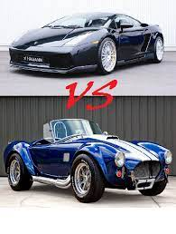

Nuestros Autos

1. ¿Cuándo se considera un auto clásico?
A los fines del registro y la compra del seguro, la antigüedad de un auto clásico, en la mayoría de los casos, es de al menos 20 años, pero no más de 40 años. Si lo registrarás (y asegurarás) como clásico, debe haber conservado el mismo diseño y las mismas especificaciones originales.